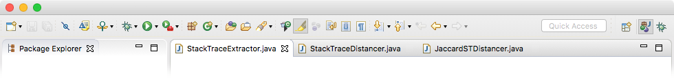
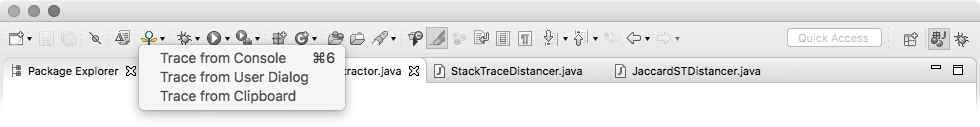

This guide provides the essential information you can use to debug your code with BugQuery. It describes in detail the services BugQuery offers online and as a plug-in for Eclipse.

BugQuery's Eclipse plug-in collects your program's stack trace, and helps you debug by automatically finding a relevant solution online, using BugQuery's index.
This section will help you install the plug-in, and teach you how to use it.
To use this plug-in you must have Eclipse installed on your machine. The plug-in is supported in Eclipse Neon, which you can download from the Eclipse Foundation website.
To download the latest version of the BugQuery plug-in itself, please visit BugQuery's GitHub repository. Locate and download BugQuery.jar, then move it to the folder named dropins in your Eclipse installation directory. If Eclipse is open, you'll need to restart the workspace for changes to take effect.
First, find BugQuery's icon () in the Eclipse toolbar. Click the arrow next to it to open the drop-down menu, which details the several stack trace extraction methods supported by the plug-in.

To debug your program with BugQuery, select the method you prefer from the drop-down menu. The plug-in will then use that method to retrive the stack trace (which has the details of your issue), and search our database for a solution. The results will be presented in your default browser.
With the BugQuery plug-in installed, you can choose from this selection of stack extraction methods:
Extract the trace from console output. After an unsuccessful execution in Eclipse, the BugQuery plug-in can automatically isolate your program's stack trace from the console output. Extract the trace using this method by selecting Trace from Console from the drop-down menu, or by using the keyboard shortcut ctrl+6 (or ⌘+6 in macOS).
Input the trace yourself. If other methods fail, you can always initiate a BugQuery search with your own input. Add your query (your stack trace) to the system clipboard using your default copy or cut, and select Trace from Clipboard in the drop-down menu. Alternatively, pick Trace from User Dialog, and insert your query in the window that opens up. Click OK and you are set. You don't have to worry about formatting or adding unnecessary information - the plug-in faithfully extracts the important parts of your input.